Aarhus Kickoff
Familietid, natur, vennetid, god mad & hygge -
ALT sammen i sportslige omgivelser
Play!
FODBOLD
HÅNDBOLD
BASKETBALL
OVERALL
Ser fra 1 til maks 5
Info
Hvad er Aarhus Kickoff 2017?
Aarhus Kickoff er et nyt og spændende event i forbindelse med Aarhus 2017 - Europæisk Kulturhovedstad, som ligger fokus på hyggelige rammer for hele familien med sportslige undertoner. Aarhus Kickoff 2017 finder sted fra den 18. - 20. august, så kom ned til Aarhus Kickoff 2017 og spark hyggen i gang!
Hvad kan du lave her?
Til Aarhus Kickoff 2017 har du og familien rig mulighed for at deltage i diverse konkurrencer, se topproffesionelle kampe i sportsgrenene håndbold, fodbold og basket, møde dine idoler til vores Meet & Greet, deltage i vores Kickoff Cup 2017 med dine holdkammerater, stille sulten med vores brede udvalg af madboder og meget mere.
Hvor finder du os?
Aarhus Kickoff 2017 er lokaliseret på Aarhus hjemmebane også kendt som Stadion Allé 70, 8000, Aarhus C.
Se på google maps
Kontakt
Aarhus Kickoff 2017 kan kontaktes på e-mail.
Der kan gå op til 2-3 hverdage før svar modtages.
Program
FREDAG
LØRDAG
SØNDAG
Ceres Arena
Ceres Park
Kickoffpladsen
15:00 - 17:00
Meet'n'greet med Bakken Bears
18:30 - 20:30
Bakken Bears vs. Hornsens Rabbits
12:00
Der bydes velkommen til Aarhus Kickoff 2017 af Aarhus borgmester - Jacob Bundsgaard
17:00 - 17:30
The Burger Schack præsentere "The Burger Schack Challenge" - hvem kan spise flest burgere på 15 minutter?
12:15 - 14:30
Mål mål mål! Runde 1
14:45 - 15:00
Prisuddeling for Mål mål mål! Runde 1
15:00 - 17:30
Mål mål mål! Runde 2
17:45 - 18:00
Prisuddeling for Mål mål mål! Runde 2
Ceres Arena
Ceres Park
Kickoffpladsen
14:00 - 15:00
Meet 'n' Greet med SK Aarhus
16:00 - 17:00
SK Aarhus vs.
10:00 - 12:00
12:30 - 13:30
Meet 'n' Greet med AGF
15:00 - 17:00
AGF vs. FCM
13:00 - 15:00
Bordfodbolds turnering
16:00 - 17:00
19:00 - 21:00
"Giv klubberne et high-five" - sæt dit præg med fingermaling!
Ceres Arena
Ceres Park
Kickoffpladsen
10:00 - 12:00
Meet 'n' Greet med Århus Håndbold
15:00 - 17:00
Århus Håndbold vs. BSV
10:00 - 17:00
arena søndag
10:00 - 17:00
10:00 - 17:00
park søndag
10:00 - 17:00
park søndag
10:00 - 12:00
Sækkeløb
14:00 - 15:00
10:00 - 17:00
kickoffpladsen søndag
Maden
Hvad for noget mad kan du få til Aarhus Kickoff 2017?
Aarhus Kickoff 2017 får leveret mad af Kødbyens Mad og Marked og The Burger Schack.
Kødbyens Mad og Marked levere lækre råvarer og mad til den danske forbruger til fornuftige priser gennem deres kendte foodmarkets.
The Burger Schack udskiller sig på det danske "fastfood-marked" ved at lave burgere med ekstraordinær kvalitet.
Tryk på navnet for at læse mere om Kødbyens Mad og Marked og The Burger Schack.
Vores partnere
Hvilke partnere samarbejder Aarhus Kickoff 2017 med?
Aarhus Kickoff 2017 samarbejder bl.a. med Hummel, Spot Festival, Kødbyens Mad og Marked og mange flere.
Uden vores partnere ville Aarhus Kickoff 2017 ikke være en relatiet, derfor vil vi selvfølgelig sige mange gange tak.
Se udvalgte partnere nedenunder.
Aarhus Kickoff Cup 2017
Kickoff Cup 2017
Aarhus Kickoff Cup 2017 løber af stablen den samme weekend som Aarhus Kickoff 2017.
Dog grundet manglende tilbagemelding fra samarbejdsklubberne, er en dato ikke blevet fastlagt endnu.
Ydeligere udmelding finder sted her på siden og via sociale medier, så bliv hængende!
Følg Med